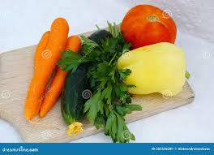
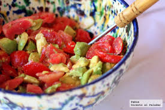
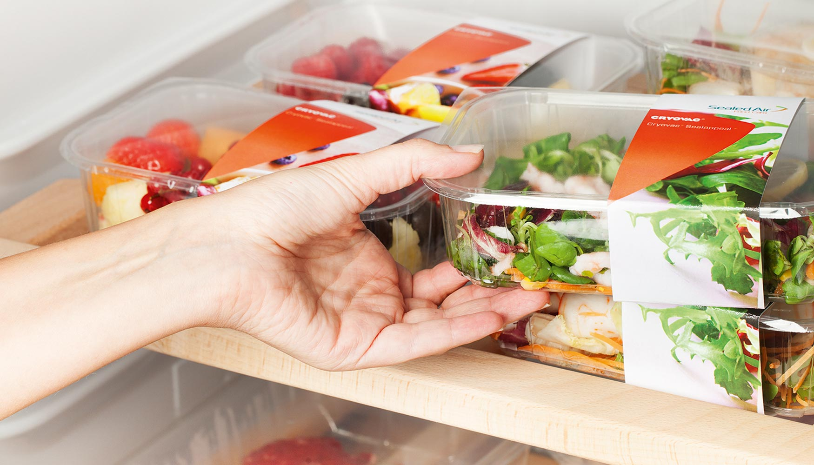
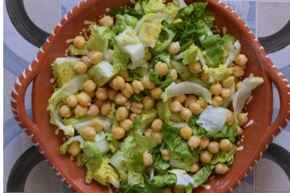

Volver al menú de inicio
Volver al menú de inicio
Plato 3: Ensalada de pollo con garbanzos y cerezas
- Garbanzos cocidos.......120 g
- Cogollos de lechuga.....2
- Pechuga de pollo..........1
- Zanahoria.....................1
- Cerezas.........................12
- Perejil fresco
- Limón o lima
- Eneldo (opcional)
- Aceite de oliva virgen extra
- Pimienta negra
- Sal
- Cortar el pollo en tiras cuando se haya enfriado. Escurrir y enjuagar con suavidad los garbanzos cocidos si son en conserva. Podemos tomarnos la molestia de pelarlos,si nos apetece .
- Lavar y secar bien los cogollos, la zanahoria, las cerezas y el perejil. Cortar en juliana fina los cogollos de lechuga, desechando la base dura. Pelar la zanahoria ligeramente y rallar con un rallador fino. Trocear las cerezas quitando el hueso. Picar el perejil.

- Combinar todos los ingredientes en una fuente o ensaladera,mezclando con suavidad . Añadir un poco de ralladura de limón o lima y aliñar con su zumo, aceite de oliva, eneldo, pimienta y un poco de sal.

- Es conveniente aliñar esta ensalada de pollo con garbanzos y cerezas antes de servir; si queremos dejarla reposar en la nevera mejor guardar el aliño para el momento de comer. Es un plato fresco y completo, que podemos enriquecer más con unos frutos secos o algo de queso.


Volver a inicio